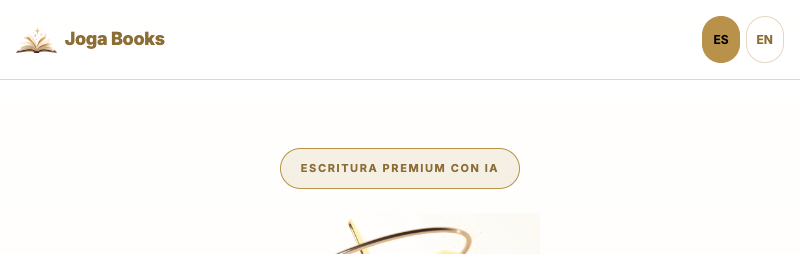
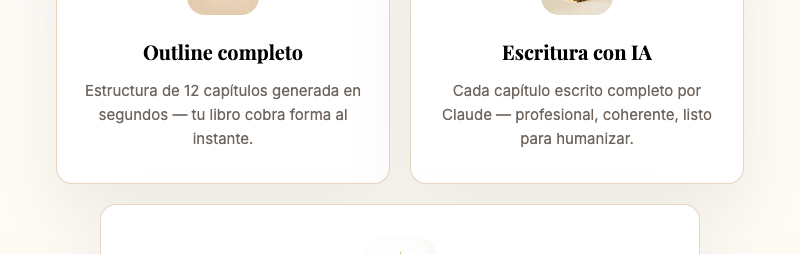
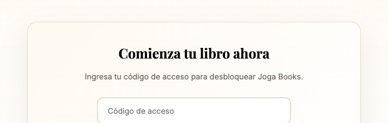
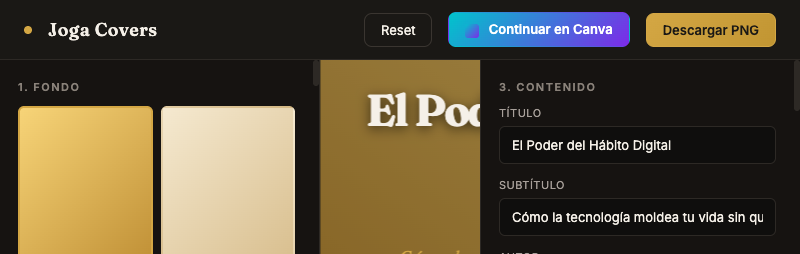
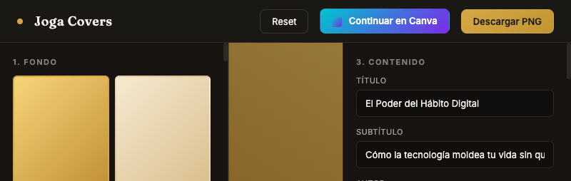
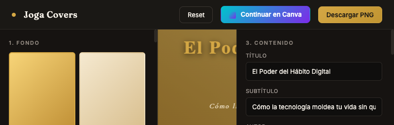
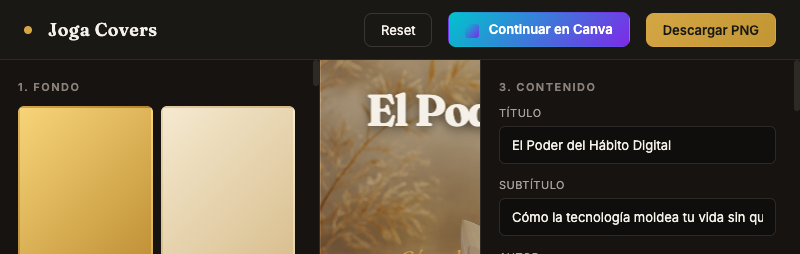
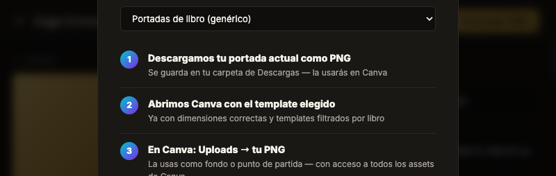
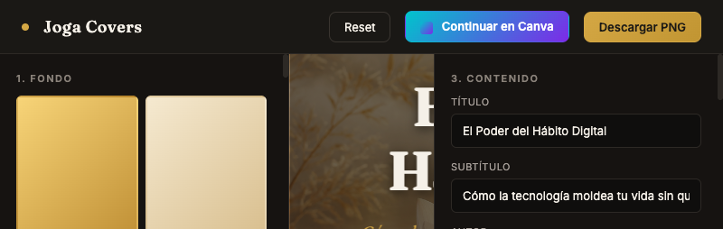

"El botón 'Diseñar portada' abre Joga Covers con el título y subtítulo del libro precargados. Todo listo para empezar a diseñar."
Flujo completo: de libro terminado a portada profesional en 3 minutos
Hero profesional con badge, logo y CTA impactante

3 cards con hover effects y social proof stats

500+ libros creados · 12 capítulos promedio · <1h de idea a borrador

Título y subtítulo listos automáticamente — cero trabajo manual
Editorial, Self-Help, Business, Memoir, Dark Academic...

Clean, título arriba, sin ornamentos

Cinzel, ornamento ⚜, aesthetic scholarly

Imagen generada con ChatGPT: silueta con explosión de luz

Controles en tiempo real: tamaño, spacing, overlay, sombra

Descarga PNG + copia título + abre Canva automáticamente

1600×2400px · 300 DPI · Print-ready PNG

De tu experiencia a un libro publicado, con portada profesional incluida
Código abierto · Sin límites · github.com/joga4live